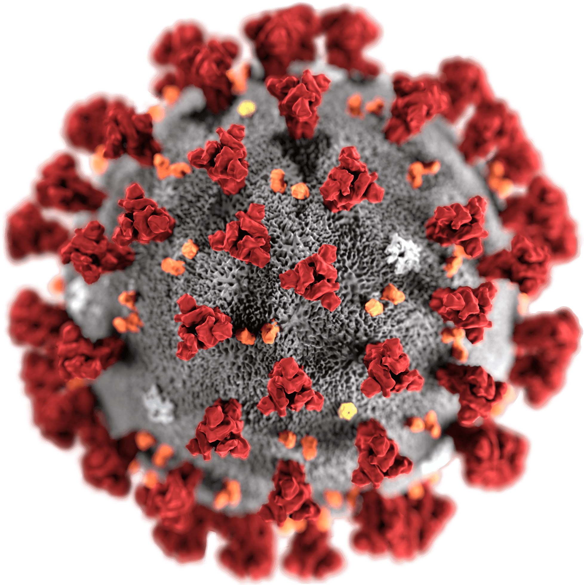

<!-- Navbar -->
<nav class="sb-topnav navbar navbar-expand navbar-dark bg-dark">
    
    <a class="navbar-brand">
        {% if not navtitle %}
            {{ _("Italy") }} | Dashboard
        {% else %}
            {{ navtitle }} | Dashboard
        {% endif %}
    </a>
    <button class="btn btn-link btn-sm order-first" id="sidebarToggle"><i class="fas fa-bars"></i></button>
</nav>